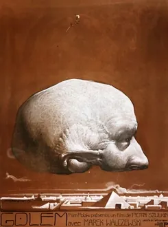

The genetics
Piotr Szulkin's film reimagines the golem of Jewish legend and Gustav Meyrink's novel as a man-made copy of a human being. The copies are rumoured to have been made to replace the dead of a nuclear war, and the protagonist himself turns out to be the duplicate of a dead man, created and watched over by doctors who answer to unnamed superiors. One of them, Holtrum, wants to make the 'perfect man' and despises his own children for falling short of his expectations. The film presents this work as a sinister, bureaucratic conspiracy that strips people of identity, and it closes ironically with the copy denying on television that human cloning exists. The sources do not say how the copies are made: the final speech calls it cloning and English Wikipedia describes the golem as a 'genetic clone', but the film treats it allegorically rather than scientifically, and an exact adult copy of a person is beyond any real cloning technique.
How genetics is portrayed
- Overall portrayal of genetics
- negative The making of human copies is presented as a dehumanising, secretive project tied to a quest for the 'perfect man', and the film ends on an ironic note, with the truth suppressed by the copy himself.
- Outcome of the genetic intervention
- negative The copied Pernat lives in confusion and fear, is surveilled, operated on and accused of Holtrum's murder, and finally becomes a mouthpiece who denies the existence of cloning on television.
- The doctors who made Pernat's copy (including Holtrum)
- villain Aim: ideological, curiosity (negative). The doctors create a copy of the dead Pernat and secretly monitor him, with Holtrum posing as the building's administrator; Holtrum aims to create the 'perfect man' and hates his own children for falling short. The student's warnings ('doctors kill people') and the surveillance and identity checks frame them as a sinister conspiracy answering to unnamed superiors.
The story
In a dystopian world devastated by nuclear war, rumours spread that artificial copies of humans are being made to replace the dead. Pernat, a humble engraver of book covers, is interrogated in what seems to be a prison; he is in fact a copy of the original Pernat, who died in mysterious circumstances. Released, he drifts through a decaying apartment block, meeting a revolutionary student who warns him about a 'criminal' who 'has made children', a doll-maker, Miriam, and her disturbed father, who recognises him as artificial. The building's administrator, Holtrum, is secretly one of the doctors who made Pernat and who monitor him. When Holtrum is found murdered, Pernat is accused. Back in his ransacked attic he finds an unfinished golem in Holtrum's kiln. Over the end credits, Pernat appears on television dismissing news of human cloning as nonsense.